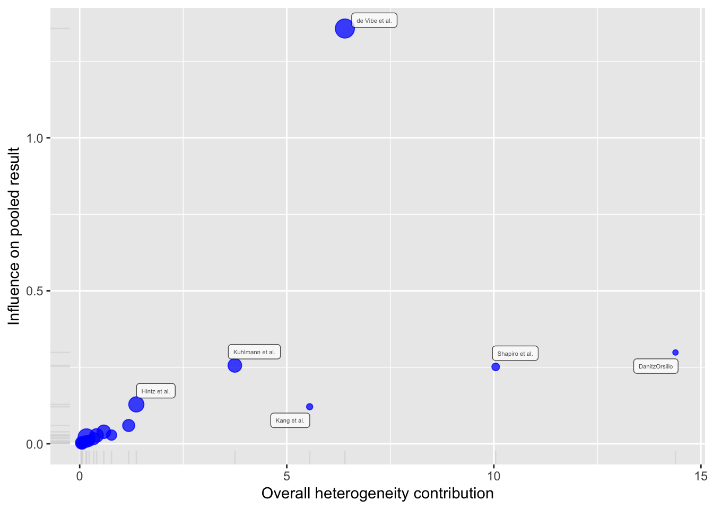

m.gen <- metagen(TE = TE,
seTE = seTE,
studlab = Author,
data = ThirdWave,
sm = "SMD",
fixed = FALSE,
random = TRUE,
method.tau = "REML",
hakn = TRUE,
title = "Third Wave Psychotherapies")5 Heterogeniteit tussen studies
5.1 Theorie
In meta-analyses moeten we niet alleen letten op de gepoolde (samen gebrachte) effectgrootte, maar ook op de heterogeniteit van de gegevens waarop dit gemiddelde effect is gebaseerd. Het totale effect legt niet vast dat de werkelijke effecten in sommige onderzoeken aanzienlijk kunnen verschillen van de puntschatting (bijv. subgroepen kunnen hele verschillende uitkomsten laten zien). Elke goede meta-analyse moet niet alleen een globaal overall-effect rapporteren, maar ook aangeven hoe betrouwbaar deze schatting is. Een essentieel onderdeel hiervan is het kwantificeren en analyseren van de heterogeniteit tussen studies \(\zeta_k\) (anders dan de steekproeffout \(\epsilon_k\)).
Cochran’s \(Q\) wordt vaak gebruikt om de variabiliteit in de meta-analyse gegevens te kwantificeren. Omdat we weten dat \(Q\) een verdeling van \(\chi^2\) volgt, stelt deze maat ons in staat om te detecteren of er meer variatie aanwezig is dan verwacht kan worden op basis van alleen steekproeffouten. Deze overmatige variabiliteit bovenop de steekproeffout vertegenwoordigt echte verschillen in de effectgroottes van studies.
Een statistische test van \(Q\) hangt echter sterk af van het type gegevens dat we hebben. We moeten niet alleen op \(Q\) vertrouwen om de mate van heterogeniteit te beoordelen. Er zijn andere maten, zoals \(I^2\), \(H^2\), \(tau\) of voorspellingsintervallen, die aanvullend gebruikt kunnen worden om iets over de tussen-studie-heterogeniteit te zeggen.
Het gemiddelde effect in een meta-analyse kan vertekend zijn als er uitschieters in onze gegevens zitten. Uitschieters hebben niet altijd een grote invloed op de resultaten van een meta-analyse. Maar als ze dat wel doen, spreken we van invloedrijke gevallen. Er zijn verschillende methoden om uitschieters en invloedrijke gevallen te identificeren. Als dergelijke studies die eruit schieten worden ontdekt, is het raadzaam om de resultaten van de meta-analyse opnieuw te berekenen zonder deze studies om te zien of dit de interpretatie van onze resultaten verandert.
5.2 Praktijk
Ook hier de onderstaande pakketten laden, het databestand ThirdWave openen en dit databestand goed bekijken.
Er zitten acht variabelen (kolommen) in (Author, Year, TE, seTE, RiskOfBias, TypeControlGroup, InterventionDuration, InterventionType, and ModeOfDelivery) en achttien studies (rijen) in. De uitkomstmaat is TE (Treatment Effect) en de standaardfout van de uitkomstmaat is seTE (Standard Error of the Treatment Effect). De variabele Author bevat de namen van de auteurs van de studies. De uitkomstmaat is een Standardized Mean Difference (SMD), er wordt een random-effects model gebruikt met de methode REML.
We gaan het voorspellen.
m.gen <- update.meta(m.gen, prediction = TRUE)We kunnen de resultaten van de meta-analyse bekijken met de summary functie.
summary(m.gen)Review: Third Wave Psychotherapies
SMD 95%-CI %W(random)
Call et al. 0.7091 [ 0.1979; 1.2203] 5.0
Cavanagh et al. 0.3549 [-0.0300; 0.7397] 6.3
DanitzOrsillo 1.7912 [ 1.1139; 2.4685] 3.8
de Vibe et al. 0.1825 [-0.0484; 0.4133] 7.9
Frazier et al. 0.4219 [ 0.1380; 0.7057] 7.3
Frogeli et al. 0.6300 [ 0.2458; 1.0142] 6.3
Gallego et al. 0.7249 [ 0.2846; 1.1652] 5.7
Hazlett-Stevens & Oren 0.5287 [ 0.1162; 0.9412] 6.0
Hintz et al. 0.2840 [-0.0453; 0.6133] 6.9
Kang et al. 1.2751 [ 0.6142; 1.9360] 3.9
Kuhlmann et al. 0.1036 [-0.2781; 0.4853] 6.3
Lever Taylor et al. 0.3884 [-0.0639; 0.8407] 5.6
Phang et al. 0.5407 [ 0.0619; 1.0196] 5.3
Rasanen et al. 0.4262 [-0.0794; 0.9317] 5.1
Ratanasiripong 0.5154 [-0.1731; 1.2039] 3.7
Shapiro et al. 1.4797 [ 0.8618; 2.0977] 4.2
Song & Lindquist 0.6126 [ 0.1683; 1.0569] 5.7
Warnecke et al. 0.6000 [ 0.1120; 1.0880] 5.2
Number of studies: k = 18
SMD 95%-CI t p-value
Random effects model (HK) 0.5771 [ 0.3782; 0.7760] 6.12 < 0.0001
Prediction interval [-0.0572; 1.2115]
Quantifying heterogeneity:
tau^2 = 0.0820 [0.0295; 0.3533]; tau = 0.2863 [0.1717; 0.5944]
I^2 = 62.6% [37.9%; 77.5%]; H = 1.64 [1.27; 2.11]
Test of heterogeneity:
Q d.f. p-value
45.50 17 0.0002
Details on meta-analytical method:
- Inverse variance method
- Restricted maximum-likelihood estimator for tau^2
- Q-Profile method for confidence interval of tau^2 and tau
- Hartung-Knapp adjustment for random effects model (df = 17)
- Prediction interval based on t-distribution (df = 16)Dit is wat er gerapporteerd kan worden:
> “De heterogeniteitsvariantie tussen studies werd geschat op \(\tau^2\) = 0,08 (95%CI: 0,03-0,35), met een \(I^2\)-waarde van 63% (95%CI: 38-78%). Het voorspellingsinterval varieerde van \(g\) = -0,06 tot 1,21, wat aangeeft dat negatieve interventie-effecten niet kunnen worden uitgesloten voor toekomstige studies.”
Om uitschieters te vinden hebben we de functie find.outliers gebruikt, die een object nodig heeft dat is gemaakt door de functie metagen.
find.outliers(m.gen)Identified outliers (random-effects model)
------------------------------------------
"DanitzOrsillo", "Shapiro et al."
Results with outliers removed
-----------------------------
Review: Third Wave Psychotherapies
Number of studies: k = 16
SMD 95%-CI t p-value
Random effects model (HK) 0.4528 [0.3257; 0.5800] 7.59 < 0.0001
Prediction interval [0.1687; 0.7369]
Quantifying heterogeneity:
tau^2 = 0.0139 [0.0000; 0.1032]; tau = 0.1180 [0.0000; 0.3213]
I^2 = 24.8% [0.0%; 58.7%]; H = 1.15 [1.00; 1.56]
Test of heterogeneity:
Q d.f. p-value
19.95 15 0.1739
Details on meta-analytical method:
- Inverse variance method
- Restricted maximum-likelihood estimator for tau^2
- Q-Profile method for confidence interval of tau^2 and tau
- Hartung-Knapp adjustment for random effects model (df = 15)
- Prediction interval based on t-distribution (df = 14)We zien dat de find.outliers functie twee uitschieters detecteerde, “DanitzOrsillo” en “Shapiro et al.”. Het {dmetar} pakket bevat ook een functie genaamd InfluenceAnalysis, waarmee we deze verschillende invloedsdiagnoses kunnen berekenen met behulp van één functie. De functie kan worden gebruikt voor elk type meta-analyseobject dat is gemaakt door {meta} functies. We slaan de resultaten van de functie op in een object genaamd m.gen.inf.
m.gen.inf <- InfluenceAnalysis(m.gen, random = TRUE)[===========================================================================] DONE Dit creëert een baujat plot, die een grafische weergave geeft van de invloed van elke studie op de heterogeniteit van de meta-analyse.
plot(m.gen.inf, "baujat")Warning: ggrepel: 12 unlabeled data points (too many overlaps). Consider
increasing max.overlaps
De volgende plot bevat verschillende invloedsdiagnoses voor elk van onze onderzoeken. Deze kunnen worden uitgezet met deze code:
plot(m.gen.inf, "influence")Het {dmetar} pakket bevat, tenslotte, ook een functie genaamd InfluenceAnalysis, waarmee we deze resultaten kunnen berekenen met behulp van de ‘leave-one-out’-methode. De eerste is gesorteerd op effectgrootte, de tweede op heterogeniteit.
plot(m.gen.inf, "es")plot(m.gen.inf, "i2")